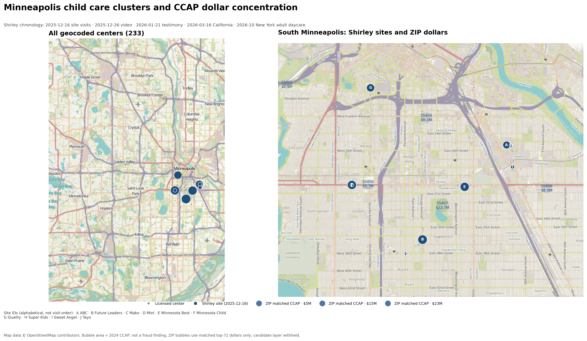

Public-record benchmark · Minnesota child care
The one Minnesota daycare that became a federal case was already No. 1 in the public CCAP record. We rebuilt Shirley’s ten-center list and checked what survives.
Public showcase · not a fraud list · not affiliatedThe one center that became a federal case was already No. 1 in the public CCAP record.
Future Leaders received $3,020,063 in 2024 CCAP — No. 1 among the 71 parsed providers — and was the largest FY2025 recipient at $3.68M. It is the one of Shirley’s ten with a federal guilty plea.
| Shirley’s claim | Our reconstruction |
|---|---|
| Ten named centers | 10 / 10 recovered |
| Nine active centers | 9 / 9 $17,391,787 FY2025 CCAP |
| Ghost daycares | not established 8 / 9 at a post-video state visit; pre-video occupancy not established |
| One confirmed case | 1 / 10 Future Leaders; No. 1 total CCAP |
| Geographic cluster | 10 / 10 in four south Minneapolis ZIPs; 5 / 10 at multi-license addresses |
| $110M fraud | not reconstructed $17.39M FY2025 for the nine active centers |
This is the validation hook: we recovered his entities, his spending, his state-visit outcome, his one confirmed case, and his geographic cluster. We did not reproduce his $110M total.
Four of the nine active centers were under further state investigation. The state did not name them.
| check | result |
|---|---|
| $110M in Minnesota fraud | not reconstructed The nine active named centers received $17,391,787 in FY2025 CCAP. |
| Ten ghost daycares | not established The post-video state visit found children at 8 of 9 active centers; it cannot establish pre-video occupancy. |
| One confirmed case | confirmed Future Leaders / Fahima Mahamud pleaded guilty to $4.6M CCAP and $854K child-nutrition fraud. |
| Mako as a current provider | contradicted Closed since 2022; no FY2025 CCAP. |
| High per-slot spending proves fraud | not supported Per-slot spending is a screen. Capacity is licensed maximum, not enrollment. |
Minnesota has a documented fraud problem. The video named ten centers. One has a confirmed federal case. Most were operating when the state visited after the video. That is not a pre-video baseline. The $17.39M FY2025 total is not the $110M claimed.
A red flag is not a finding. A finding is not a conviction. A conviction is not prevalence. A post-video visit is not a pre-video control.
| benchmark | value | note |
|---|---|---|
| FY2025 sample median, per licensed slot | $20,811 | Ten named centers. |
| FY2025 confirmed anchor, per licensed slot | $40,889 | 1.96× the sample median. |
| FY2025 next cluster | 1.19–1.26× | Next three centers. |
| 2024 matched median, per licensed slot | $15,689 | 38 matched top-72 providers. |
| 2024 matched top, per licensed slot | $37,644 | Top of the matched set. |
| 2024 matched median, total CCAP | $1,523,045 | 38 matched top-72 providers. |
| 2024 matched top, total CCAP | $3,020,063 | Top of the matched set. |
These are different samples and different years. Do not mix them into one ranking.
What recall@10 does not mean. It does not mean Nick missed nine frauds. It means our top 10 contains only one of his ten featured centers. The other nine are our unverified candidates. The intersection is one; that is a disagreement, not proof of omission.
Random recall@10 is 4.2%; our 10% is about 2.4× random. At k=50, 60% vs 21% is about 2.9× random. The model is a broad screen, not a top-10 oracle.

This repo does not include the sequence of screens, the exact predicates or weights, independent candidate names or addresses, raw records, source identities, or the working map. The point of the showcase is to show that the work is real and measurable without handing over the case file.
We publish the aggregate method, sources, limitations, and corrections. The live thresholds, candidate layer, and working map stay private.
California cluster aggregate note: 14545 Friar St, Van Nuys. No candidate names are published.
Every number is tied to a public record. The method and candidate layer are withheld, not the receipts.
DM first. Verification required. No phone calls.
DM @nelvOfficial or email nelv@nelworks.com with your name, affiliation, a verifiable institutional or newsroom contact, what you want to verify, and why you need entity-level detail.
The full report is for journalists, regulators, auditors, legal-aid or academic researchers, and affected providers or their representatives. We do not send it to anonymous accounts. We do not take unscheduled calls or voice notes. See CONTACT.md and SAFETY.md.